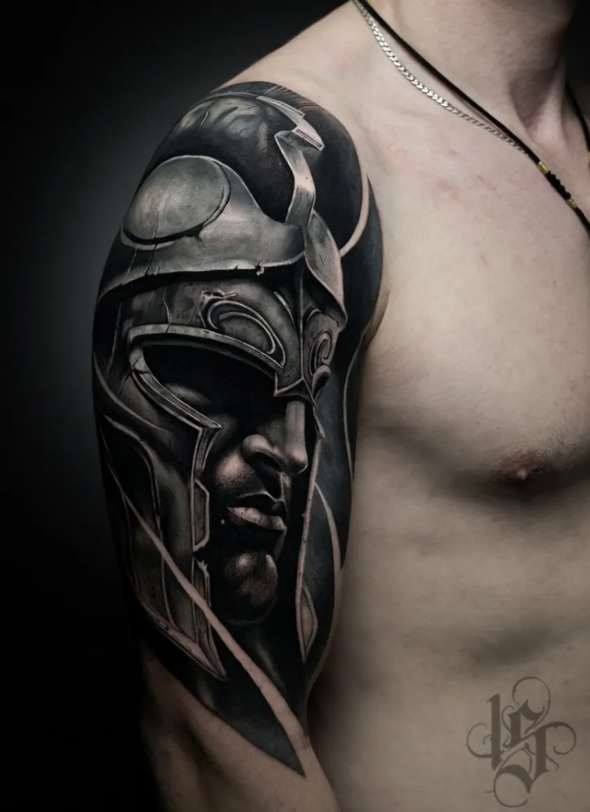
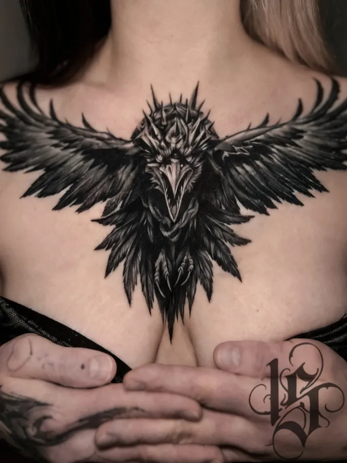
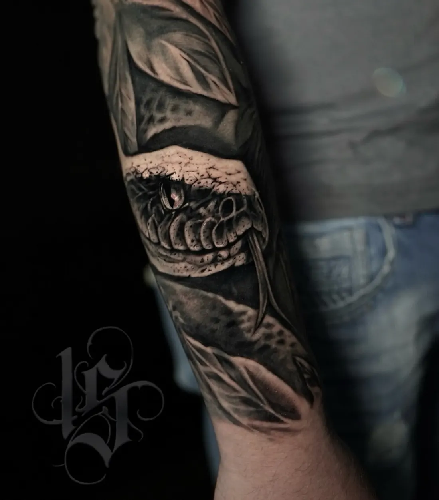

Тату-студия INKSIDE · Минск
Реализм тату в Минске
Чёрно-белый и цветной реализм, портреты и микрореализм. Два мастера с опытом больше 8 лет. Бесплатно обсудим идею и назовём цену до сеанса.
Консультация бесплатная. Ежедневно 11:00-23:00 по записи.
Ч/б и цветной реализм
Чёрно-белый реализм строится на оттенках серого и контрасте, цветной - на оттенках и переходах цвета. Портреты, животные, фигуры и сюжеты: примеры обоих вариантов - в галерее ниже и на стене работ.
Хочется реализм совсем небольшого размера? Для этого есть микрореализм: детальный рисунок в компактном формате.
Не поплывут ли детали
При правильной глубине и расстоянии между деталями - нет. Поэтому мастер подгоняет эскиз под размер и место: для мелкого реализма иногда стоит чуть увеличить рисунок, чтобы детали сохранились и через годы.
Мастера реализма
Надежда - микрореализм, цветной и ч/б реализм, большие проекты. Превращает размытую идею в чистый аккуратный эскиз, хороший выбор для первой тату. Работы: Instagram и TikTok @st.nadya_tattoo.
Виталий - ч/б реализм, рукава и ноги, крупные проекты. Работы: Instagram @inkside.minsk.
Как проходит работа
- Идея. Присылаете референс или просто мысль. Бесплатно обсуждаем размер, место и цену.
- Эскиз и стенсил. Эскиз рисуется под ваше тело, перевод на коже показывает, где пройдёт каждая линия.
- Сеанс. Одноразовые иглы вскрываем при вас. Крупное делим на сеансы, реализм на рукав или ногу - тоже.
- Заживление. План ухода по дням, через месяц присылаете фото, мы проверяем результат.
Цена реализма
Реализм обычно занимает больше времени, чем линии и графика, поэтому в калькуляторе на главной он считается дороже, а цветной реализм дороже ч/б. Базовые цены одинаковые для всех стилей:
| Минимум, до 1 часа | 180 BYN |
| Каждый следующий час | 150 BYN |
| Эскиз под вас | от 40 BYN |
| Консультация | 0 BYN |
| До 5 см | от 180 BYN |
| 5-10 см | от 330 BYN |
| 10-20 см | от 480 BYN |
| Рукав, нога или большая работа (сеанс) | от 930 BYN |
Итоговую цену мастер называет после утверждения эскиза: важны детализация, размер и место.
Работы







Больше работ - на главной и в Instagram @inkside.minsk.
Вопросы
Чем ч/б реализм отличается от цветного?
Ч/б работает с оттенками серого и контрастом, цветной - с оттенками и переходами цвета. По времени цветной реализм обычно дольше, поэтому дороже.
Можно сделать портрет по фото?
Да, портреты есть среди наших работ. Пришлите фото-референс в Telegram: мастер подскажет размер, при котором сохранятся детали, и назовёт цену.
Сколько стоит тату в реализме?
От 180 BYN за работу до 1 часа, каждый следующий час 150 BYN, эскиз от 40 BYN. Итоговую цену мастер называет после утверждения эскиза.
Это больно?
Зависит от зоны: руки и икры терпимо, рёбра и кисти чувствительнее. Делаем паузы, когда нужно.
Записаться
Напишите идею в двух словах: мастер честно скажет, подойдёт ли она вам и сколько будет стоить.
- адрес
- Минск, пер. Макаёнка 4, пом. 64
- телефон
- +375 (44) 511-19-12
- часы
- ежедневно 11:00-23:00, по предварительной записи